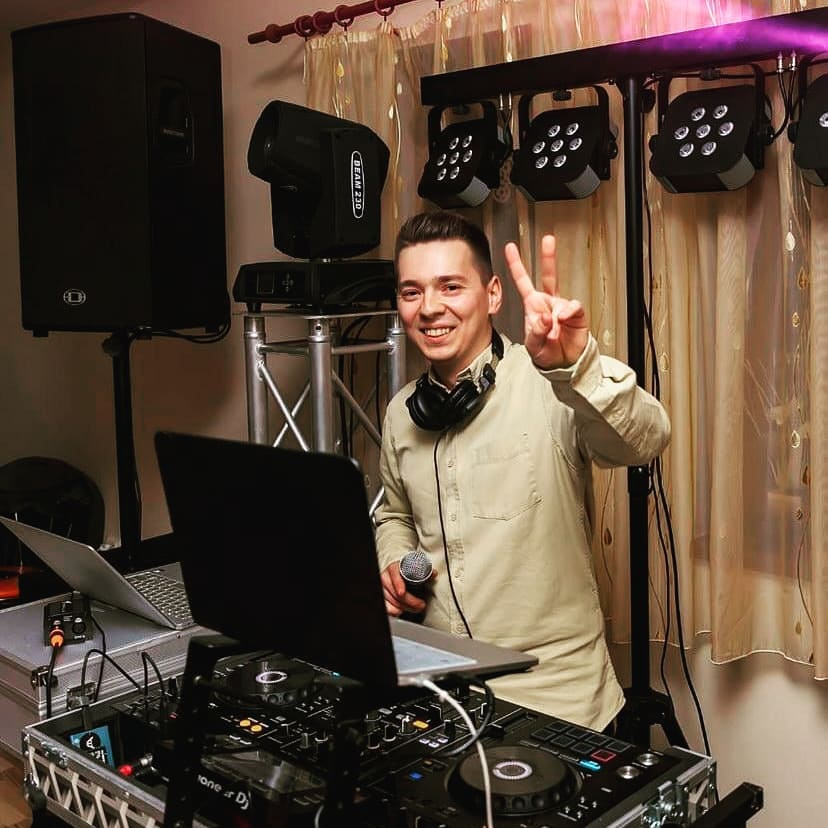
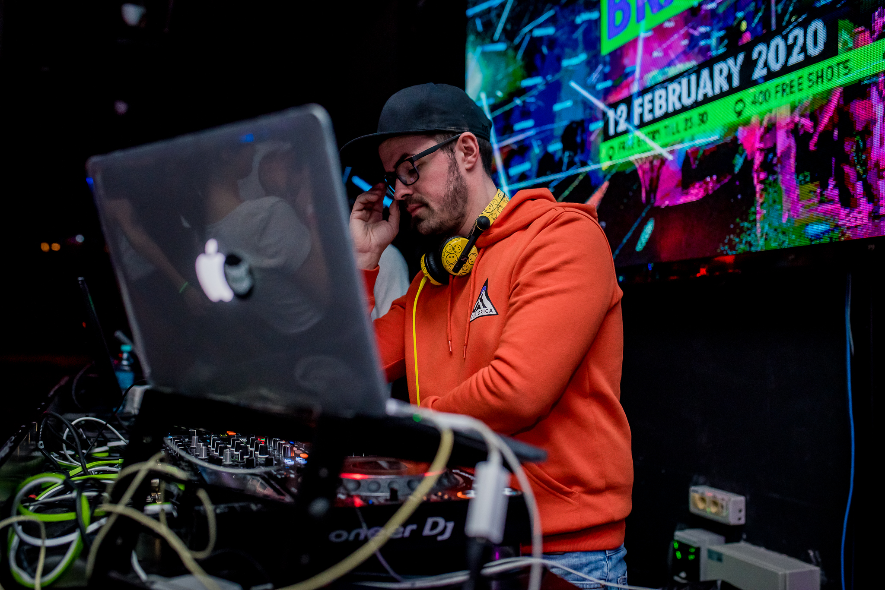
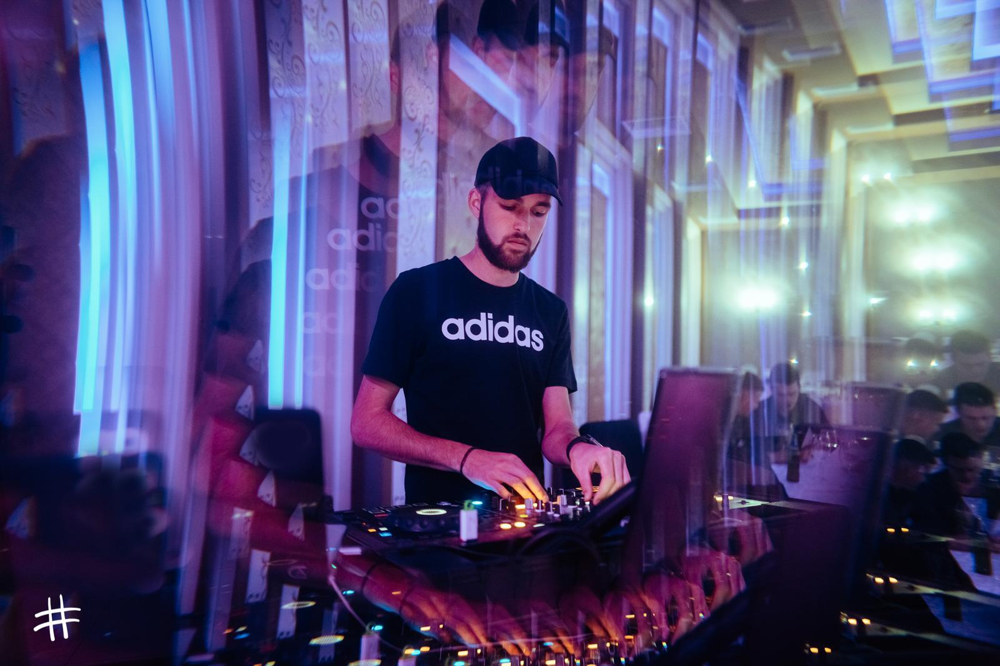
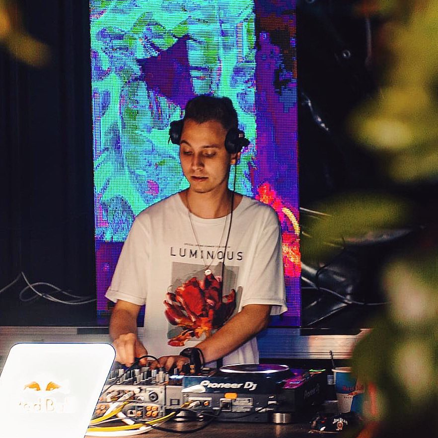
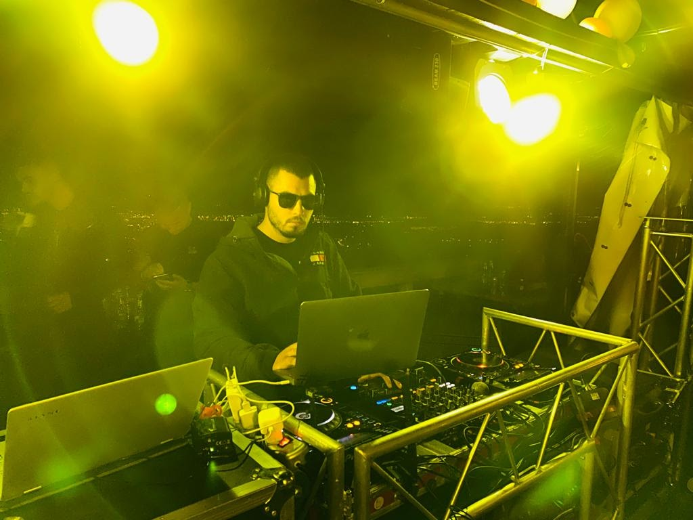
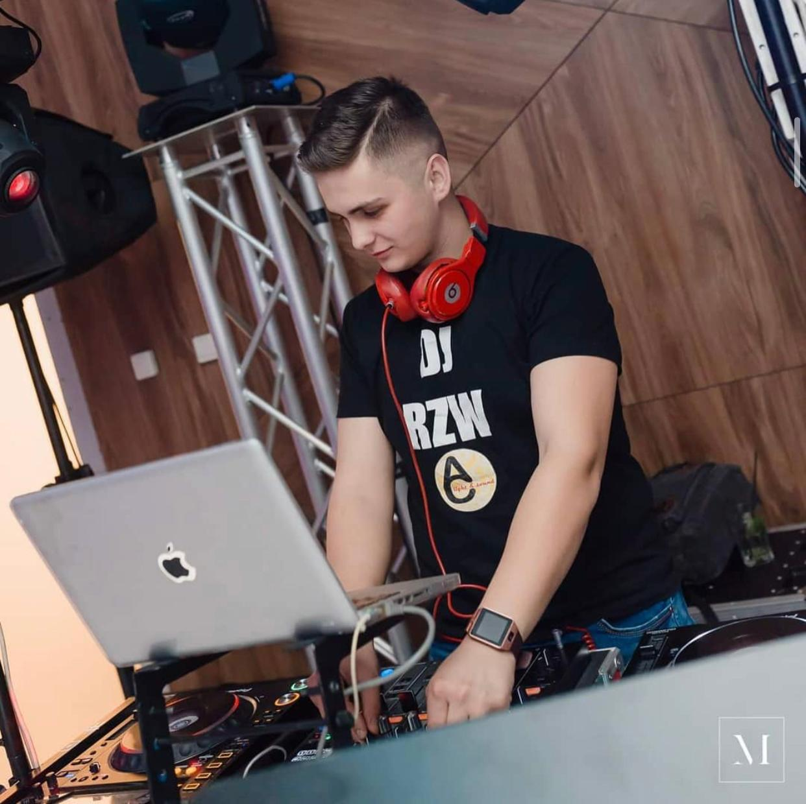

Numele meu este Cîmpean Adrian, iar majoritatea oamenilor ma cunosc drept "Campo". Campo vine de la numele de Dj, si anume DJ Adrian Campo. Pun muzica de aproximativ 10 ani atat la evenimente private cat si in cluburi/pub-uri insa sunt si DJ producator de aproape 6 ani. Ceea ce ma defineste cel mai bine, pot spune ca este originalitatea pentru ca imi place sa fac totul diferit fata de restul si imi place sa ma reinventez constant pentru a da dovada de aceasta originalitate.

Numele meu este Cristian Dan Abrudan, sau DJ DA'CRISS cum ma stiu majoritatea. Pun muzica de 13 ani,timp in care m-am axat pe evenimente private cat si pe club (mixez in cluburi din 2009 iar in prezent sunt DJ rezident la After Eight, London Pub si Caro Club Cluj-Napoca). In noiembrie 2008, am infiintat firma care a reunit initial o formula de 2 persoane iar astazi s-a ajuns la o echipa de 14 prieteni, DJ, profesionisti, oameni super frumosi in mijlocul carora, sun foarte mandru sa ma aflu. De 10 ani detin atestatul de DJ. Ceea ce mixez si stilul in care o fac ma defineste de fiecare data si imi descrie perfect starea.

Numele meu este Raul Macarie si sunt din Cluj-Napoca. Activez in acest domeniu de aproximativ 5 ani, in special pe evenimente private. Sun o fire deschisa si maleabila, incercand sa satisfac gusturile fiecarui client, indiferent de eveniment. De altfel, sunt mandru ca fac parte din echipa "A&C Light and Sound", o echipa de oameni tineri si plini de viata de la care am avut de invatat multe lucruri pe parcursul acestor ani.

Numele meu este Kamil Stanescu sau Kamil S dupa cum ma stie lumea. Mi-am castigat renumele prin devotamentul si munca depuse atat in productia de edit-uri ale celor mai cunoscute piese, cat si in constructia seturilor electrizante care te fac sa dansezi pana in zori. Am inceput sa mixez in anul 2009, mai intai pentru radio-uri online. Pe parcurs am acumulat experienta, iar acum sunt rezidentul clubului After Eight - Cocktail Club din Cluj-Napoca si duc cu mine vibe-ul orasului in cluburile de renume din tara.

Numele meu este Mihai Pertea pun muzica de aproape 6 ani, si sunt dj rezident la club "Plan B" din Cluj-Napoca de 3 ani. Sunt o fire increzatoare, optimista si imi place sa tratez toate lucrurile cu maxima seriozitate.

Numele meu este Razvan Colto si sunt o persoana sociabila si deschisa. Am inceput sa activez in acest domeniu de la varsta de 15 ani. Totul a inceput de la un eveniment fericit in familie, unde, pentru prima data am descoperit si constientizat cu adevarat impactul feedback-ului oferit de oamenii prezenti pe ringul de dans care-si exprimau fericirea prin dans si zambete, iar acestea m-au facut sa simt ceva ce nu am mai simtit si bineinteles ce imi doream sa simt cat mai des .